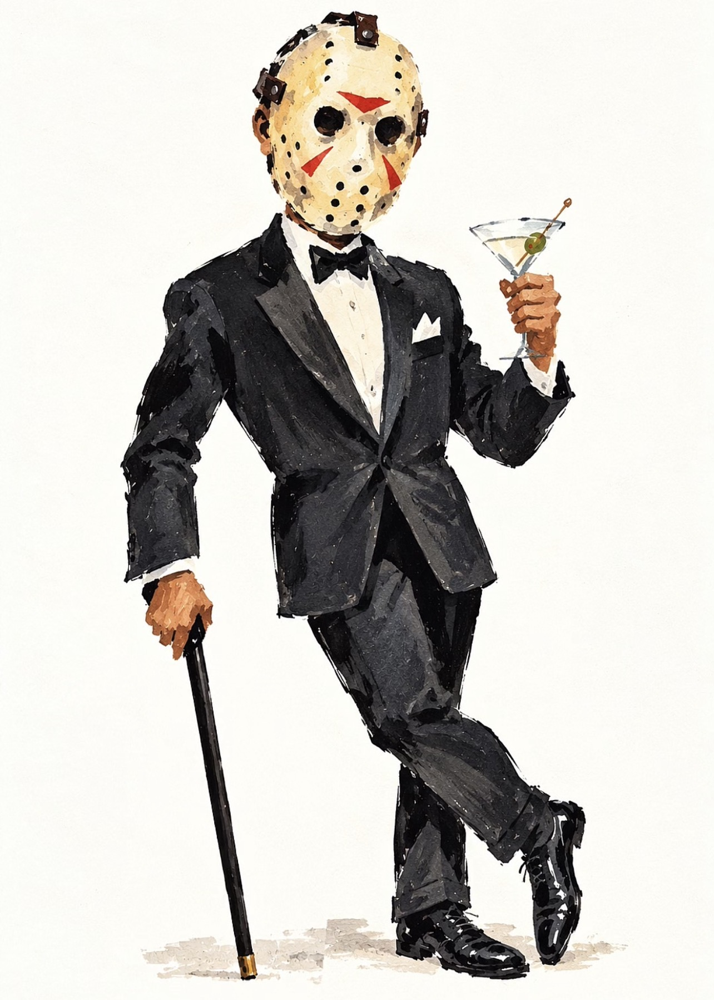

13¢ Local Programs Nov. 13
ALOHA
FILM AWARDS
Jason takes his chances on Aloha’s student horror films
Page 13

Friday
the 13th
the 13th
of November at Aloha College Marbella
A night of preliminary projects made by our students in one month
Feeling lucky?